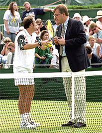
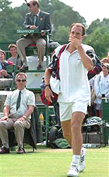

Keep the Goal in Mind¶
By Allen Fox, Ph.D.¶

The champions never forget where their best interests lie. While the winners do not consciously focus on their ultimate goals at all times, they never lose track, at some lower level of consciousness, of what they are trying to accomplish - the object of the game, so to speak. The losers, by contrast, often seem mindless of their own best interests.
The champions rarely do anything that does not help them win, while the losers often do, a tendency, as usual, driven by the fear of failure. In fact, the \"Golden Rule\" for anyone working towards becoming a champion is to test any action before taking it with the question, \"Will this help me win the match?\" If the answer is not yes, don't do it.
Meltdown
A truly bizarre example of what can happen when one does not apply this test was provided by Jeff Tarango, a 26-year-old American, at Wimbledon in 1996. Tarango had never before won a match at Wimbledon. But this year he was in the third round and had an excellent chance of getting to the round of 16 because he was playing Alexander Mronz of Germany, whose name in the tennis world is hardly a household (or for that matter, pronounceable) word. During the course of the match, Tarango hit what he thought was an ace, but it was called a fault. After fruitlessly trying to convince the umpire to overrule the linesman, Tarango was heckled by the crowd as he walked into position for his second serve. Angrily he told them to \"Shut up.\" The umpire gave him a code violation for \"audible obscenity.\"

Was it really in Jeff's interest to demand to see the supervisor?
Although it only amounted to a warning, this so infuriated Tarango that he demanded that the referee supervisor come to the court. The supervisor dutifully did so and told Tarango to continue playing. Tarango then called the umpire \"the most corrupt official in the game\" and was promptly assessed a point penalty for verbal abuse which cost him the game.
At this Tarango shouted \"That's it. No way. That's it.\" He picked up his bags, stalked off the court, and entered the history books as the first player in the Open era to default himself at Wimbledon. To make matters worse (yes, it's always possible), Tarango held a press conference at which he justified calling the umpire \"corrupt\" by accusing him, on the basis of hearsay, of having, in the past, \"given\" matches to players who were his friends.
Now let's tote up the damages. Tarango threw away an excellent chance to advance in the tournament since he was, after all, favored in the match. He was defaulted in his mixed doubles, which did not endear him to his partner. It cost him a lot of money which he could ill afford since he is not one of the stars of the game - fines totaling approximately \$50,000, not counting legal expenses, as well as any additional prize money he might have won.

What really caused Jeff Tarango to walk off the court at Wimbledon?
--
--
Finally, his public image was not enhanced by making himself look like an overgrown brat who would have been well served by a few good spankings as a child. All in all, it was not one of Tarango's better afternoons, the object of the game (to win the match) having apparently slipped his mind.
With all these damages accruing as a result of his actions, one might reasonably wonder how a man of Tarango's substantial intellect (he is also a likeble, funny, bright Stanford man and a friend of mine) could have so completely lost track of his simple goal of winning the match? The answer is that fear of failure (he was losing), exacerbated by the stress and emotion of the situation, drove his actions.
He was afraid that he was going to lose the match, and this fanned the flames of his irrationality. Quitting was his unconscious way of escaping from a situation that he feared would end badly. If you don't believe this, picture the following thought experiment: God appears over Tarango's shoulder and whispers in his ear that he is guaranteed to win the match. Now what would Tarango have done? He might still have fought with the umpire, but I would bet a lot of money that he would have stuck around to win the match.
The Champions Are Different
John McEnroe had a similar fiery temperament, but he was able to retain his ultimate rationality even in the throes of emotionality and outcome uncertainty. Because at some deep level he sensed that he was going to win, he was able to comprehend where the line demarcating disaster was, and at the last moment, exert enough self-control (although it didn't look like it) to avoid crossing it.

John McEnroe: a fiery temperament, but rational at the last instant.
He got into emotional twits where he made unreasonable demands, berated linesmen and umpires, and threw matches into confusion, but he usually benefited from this behavior. His behavior intimidated linesmen into giving him the benefit of the doubt on close calls; it disturbed his opponents and put off their games; and McEnroe stimulated himself with adrenaline and often played better.
One year he did manage to get himself defaulted in the Australian Open, but he said after the match that he had been unaware of a recent rule change where the authorities had cut down by one the number of abuses a player was allowed before default.

**John's Australian default: a miscalculation not a loss of reason.**
The progression toward default had formerly been \"warning,\" \"point penalty,\" \"game penalty,\" \"DEFAULT. \" But this had been changed to \"warning,\" \"point penalty,\" \"DEFAULT.\" McEnroe simply miscalculated and thought he could afford one more penalty. In contrast with Tarango, McEnroe may sometimes have looked like an uncontrolled, irrational wild man, but all the while he was carefully counting his penalties so that he could stop himself before he went too far. McEnroe didn't often forget where his interests lie.
Human beings are supposed to be rational creatures, but too often our emotions drive our actions while our reasoning abilities are relegated to the back of the bus. This is frequently the case in tennis matches because the one-on-one aspect of tennis competition makes it an inherently emotional situation.
Errant emotions during match-play tempt us to forget our objectives (winning the match) and engross ourselves in anger, personal antagonism, defeatism, excuse-making, or other counter-productive mental states. Keeping in mind our \"Golden Rule\" test of \"Will This Help Me Win the Match?\" can help ward off such debilitating and destructive mental states.
This article is excerpted from Allen's new book, Tennis: Winning the Mental Match, which will be available at the end of 2010 on Amazon and on Allen's new website, www.allenfoxtennis.net.
Read More From Allen!
Visit him at www.allenfoxtennis.net
|  | Tennis is mentally the most difficult sport due to it's personal nature which makes winning and losing feel more |
| important than they are. In this new book, Allen offers his proven solutions to problems such as choking, reducing | |
| stress, finishing matches, and developing confidence. Based on a life time of high level play and coaching success, | |
| it's a must for all competitive players. | |
| [ to | |
| Order](http://www.amazon.com/Tennis-Winning-Mental-Allen-Fox/dp/0615407765/ref=sr_1_1?ie=UTF8&qid=1336083459&sr=8-1). |
|  | eminently preferable to losing. In his new book, The |
| Winner's Mind, Allen lays out an original step-by-step | |
| plan for succeeding at any of life's endeavors, based on | |
| his first hand and very personal observations of the | |
| careers of both world-class tennis players and successful | |
| businessman. The bottom line is that even if you are not a | |
| born champion--and only a tiny percentage of us are--you | |
| can still use the success strategies of champions to tilt | |
| the odds in your favor. Writing with brutal honesty and dry | |
| humor, Fox lays out the common mental characteristics of | |
| winners in sports and in life. He explains the critical | |
| role of intellect over emotion. He analyzes the struggle | |
| between ambition and fear and the insidious and pervasive | |
| fear of failure that undermines so many of us. He then | |
| outline how to confront and overcome these fears in your | |
| life and career, even when they are initially subconscious. | |
| Must reading from one of the great thinkers in tennis, and | |
| a Renaissance Man in life. [ to | |
| Order](http://www.tennis-warehouse.com/descpage-MIND.html). | |
| To purchase this book you can also send a check for \$17.95 | |
| to Allen Fox, 1120 Inverness Place, San Luis Obispo, CA. | |
| 93401. The price includes shipping. |
|  | insightful analysts in modern tennis. A top 10 |
| American player from the glory days before Open | |
| tennis, Fox played many of the legendary greats, among | |
| them Roy Emerson, Rod Laver, Stan Smith, and Arthur | |
| Ashe. At Pepperdine he developed the men's tennis | |
| program into an elite contender for national titles, | |
| and gave Brad Gilbert the insights that became the | |
| foundation for \"Winning Ugly\". His book Think to Win | |
| is a modern classic. He has also starred in a series | |
| of acclaimed videos, including Pro Secrets of Match | |
| Play and Allen Fox's Ultimate Tennis Lesson. | |